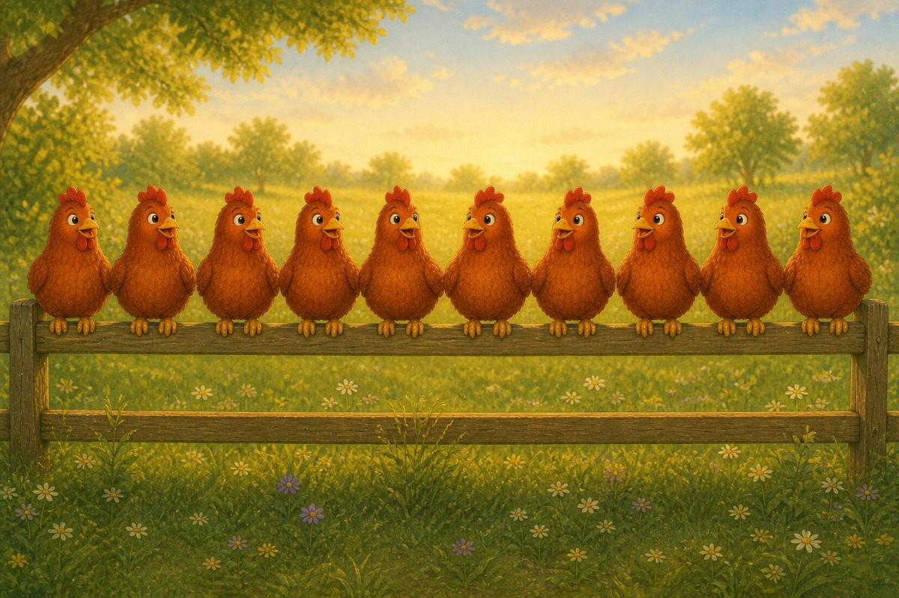
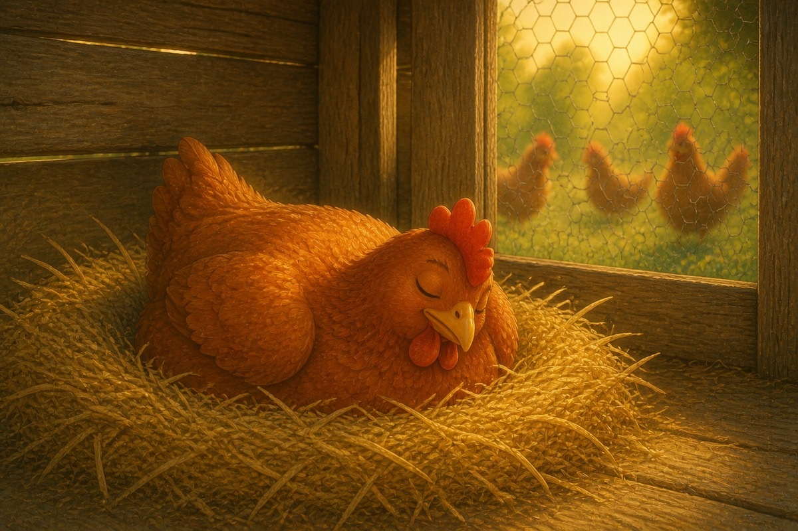
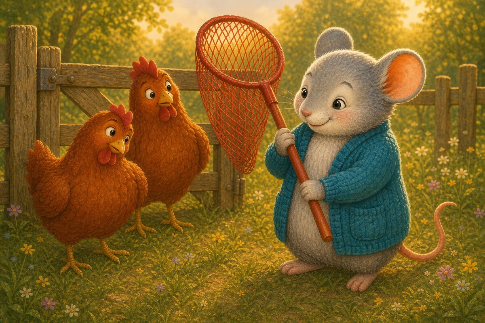
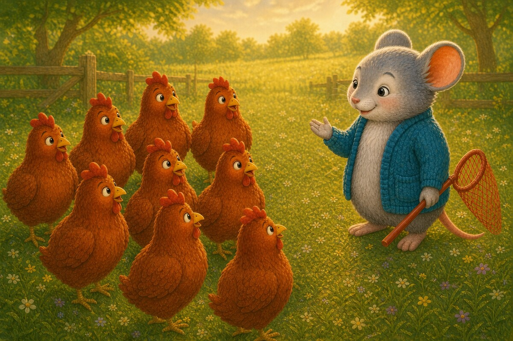
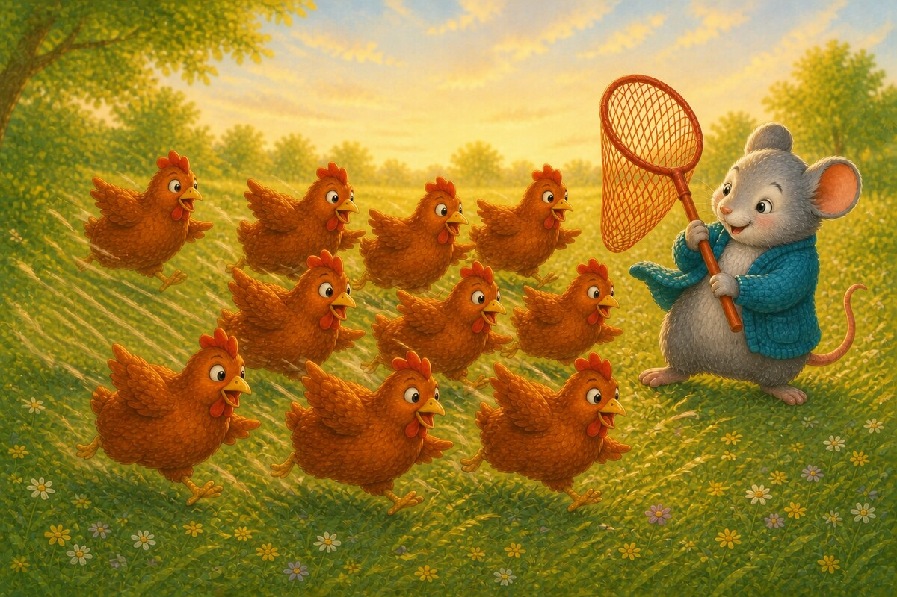
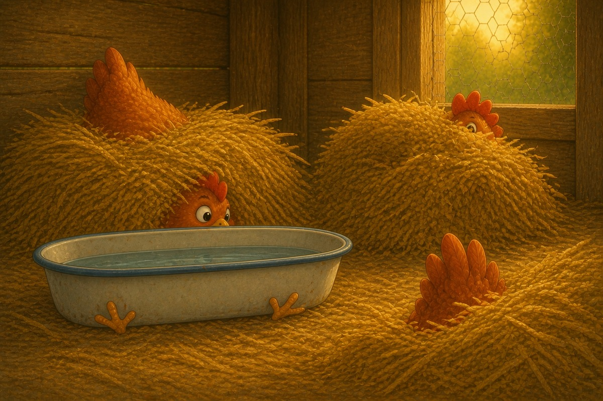
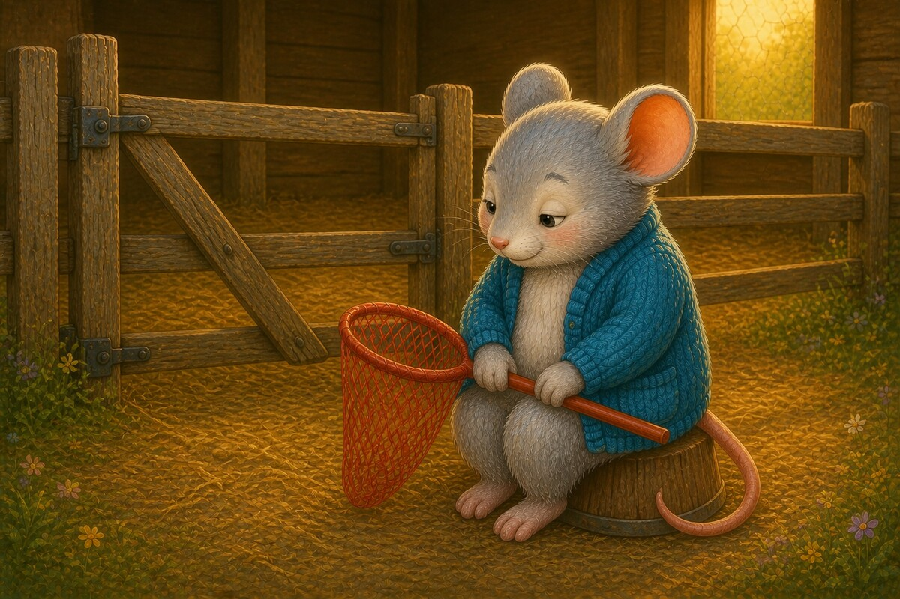
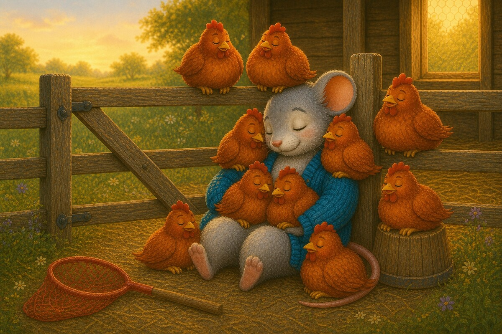

Page 1 of 8
Ten red hens sit.
Meet the short E sound. A 8-page decodable story focusing on Short E · c e h r m d.


Ten red hens sit.

A hen naps in the pen.

Nan had a red net.

Nan met ten hens.

Ten hens ran and ran!

The hens hid in the pen.

Nan sat. Nan is sad.

Ten red hens sit! Nan can nap.
In the pen. Can you sound out p-e-n?
Stage 2 adds c, e, h, r, m and d to the Stage 1 sounds. Every word here can be sounded out except a, is and the, which are worth reading for your child the first time. Hens and naps add an s to the end of a known word — say the base word first, then add the ending. Listen for the short E in ten, red, hen, pen, net and met: it is the sound children most often confuse with short A.
SnackPack ABC & Alphabet continues with letter activities, read-together stories and more early phonics practice.
Next storyThe Cat and the Rat
Know a family or class who would enjoy it?